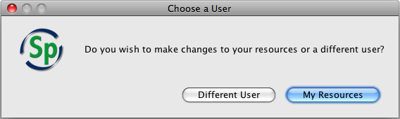
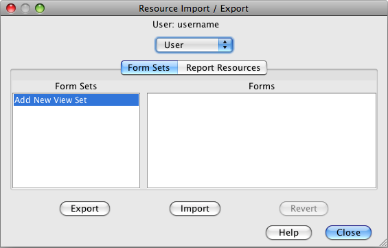

At this time Specify 6 does not include a Form Editor, as was found in Specify 5. The forms have been created programmatically to be extremely flexible and can be exported as XML and either edited by on-site staff or emailed to the Specify staff for assistance with form editing and customization. Forms are imported and exported using the Resource Import/Export dialog. Forms are exported as a set of forms, or form set, and are imported back into Specify as a form set as well.
Reports can also be imported and exported through the use of this tool. Reports are created from a query and export as a file that contains both the report and query. Reports are typically exported so they may be imported back into Specify either by a new user or at a different level, allowing the reports to be shared within the community.
Users that can program in MySQL can create their own report for inclusion in Specify 6. Create the Report including this Report Query Where clause: "where co.collectionobjectid $P!{itemnum} . Also include a parameter named "itemnum".
Importing and exporting is based on the same levels that are found within the institution, with the addition of a System level:
For each level the imported resource (form or report) is made available to other users at the same level as well as all levels below it. This is based on the permissions for the person importing. Resources imported at the bottom (User) level will be made available to the user only. At the User Type (Group) level the resource is accessible to all users within the collection that are part of the same Group as the individual user.
Forms are named for the Table they represent. For instance, the Collection Object form is named CollectionObject. As stated above, forms are imported and exported as a form set. When the Form tab is active the window splits to show the name of the form set on the left and the individual forms that are included in the set on the right. When a form is imported back into Specify it can either be added to the forms available within Specify by naming it a unique name, or replace an existing form by importing it back into Specify as the same name. Specify walks up the tree starting at the User level when loading forms for display within Specify. In other words, if a CollectionObject form is located at both the User level and the Discipline level, Specify will find and display only the User level form.
Resources can not be imported or exported from the System level. It holds the set of resources that Specify ships with and can be used to restore the resources if needed.
Choose System > Resource Import/Export to open the Import/Export tool. This Import/Export tool (and menu) is only available to Administrators.
You will receive a warning dialog informing you that the changes will require Specify to shut down and restart.
You will then see this dialog:

Choose a User
Changing Forms for Another User
If you wish to import forms for a single user other than yourself click the Different User button. A dialog containing a list of users for the current division will be provided. If you wish to import forms for a user in another division you must first Change Collections to a collection in the desired division.
Changing Forms for Yourself
If you wish to change your forms click the My Resources button.

Resource Import/Export
Resource Import/Export Tool
The Resource Import/Export tool will open.
A prompt at the top of the tool displays the name of the user chosen to receive the imported form or report.
You must then choose the level at which you wish the resource to be imported into and accessed by:
User; only the person displayed at the top of the tool.
User Type; entire group the user belongs to within the current collection.
Collection; all users within the current collection.
Discipline; all users within the current discipline (including all collections within the discipline).
Institution; all Specify users currently active in Specify.
A tab at the top of the tool allows the choice of importing/exporting either a Form Set or Report.
Next, simply choose a Form Set/Report Resource from left pane and click the Import button to import a resource.
Or; choose a Form Set/Report Resource from the right pane and click the Export button to export a resource.
Revert will delete ALL files that have ever been imported. The Uploader tool remembers the files that Specify shipped with at each level and reverts back to those files. If the Uploader recognizes imported files the Revert button will become enabled.